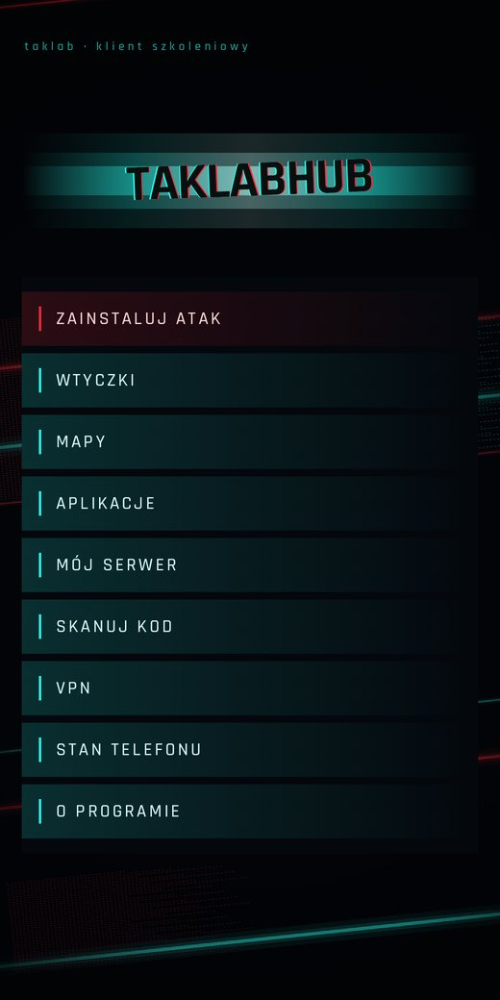
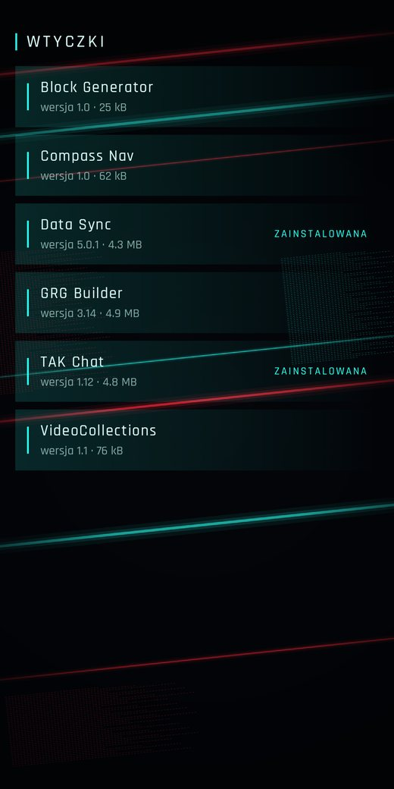
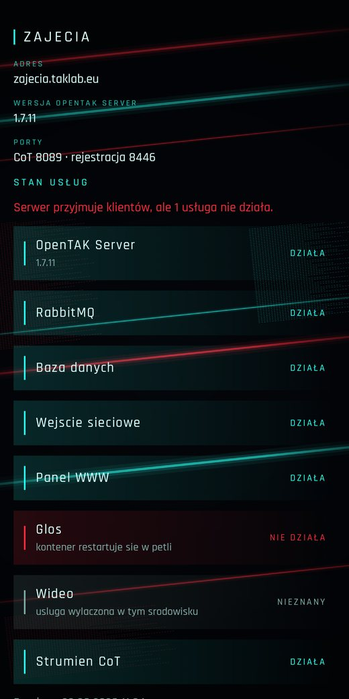

TakLab Hub
Android app
Takes a phone from empty to a working ATAK client. Fetches a catalogue, installs ATAK and its plugins with checksum verification, and provisions a server environment.
Why it exists
Setting up ATAK on a phone takes several steps a newcomer cannot guess: find the right version of the app, match plugins to that version, load maps, and import a connection package with a certificate. Every one of those steps can go wrong.
TakLab Hub does it for the user. It installs files in the right order, verifies them first, and hands the rest to ATAK.
How it works
The app downloads a file catalogue from a public bucket. The catalogue records which ATAK version each plugin matches and the checksum of every file.
Before installing, the app computes the SHA-256 of the downloaded file and compares it against the catalogue. A file that does not match is not installed.
The „My server” screen provisions a training environment through the TakLab API, adds operators, issues their connection packages, and shows a QR code for enrolment.
Status
The app runs on a phone. Installing ATAK and plugins is finished. Server environments run against a stub API, because the API itself is still being built. Maps and VPN are screens without function for now.
Screenshots


